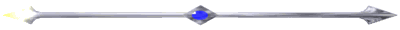

St Finnbars Cathedral is a splendid triple-spired example of French-gothic architecture. It stands where the saint established his monastic school about 650 AD. Among its most striking features are the fine rose window, the mosaic pavements and the elaborate carving throughout.
Walk along the Western Road to Tudor-Gothic University College with its attractive riverside quadrangle, and visit the Honan Chapel there. It is modeled on Cormac's Chapel at Cashel, and has a superb interior including stained-glass windows by Sarah Purser and Harry Clarke.
Make your way up the North Main Street where the Cork Vision Centre is located, then over North Gate Bridge and climb up Shandon Church, the tower of which you will have noticed dominating the north side of the city from its lofty hill-top position. Two sides of the tower are faced with red sandstone, two with white limestone - "Partly coloured like the people, red and white is Shandon Steeple" goes an old doggerel. Its peal of eight bells, cast in Gloucester in 1750, have become famous, and you may play them yourself, from "music" cards supplied. Your rendering of Danny Boy or Ave Maria will drift gently down the hill and over the river, to be heard all over the city. Corkonians depend on Shandon clock for their time, and its fish weather-vane for their weather forecast.
The site of St. Fin Barre's cathedral has been a place of worship since the 7th century, and the school founded by him there continued to be listed among the five principal monastic schools of Ireland down to the 10th century. No trace of the early foundation remains, except for the cemetery in which he was buried, a site marked by the present cathedral and a succession of previous buildings.
Few traces remain of the medieval buildings, though entries in the chapter minute books give some idea of its size and appearance. A square stone font, some carved heads, a piscina, and a carved doorway (now inserted in the south boundary wall: see adjacent) are from the period. The communion vessels, still in use, include a silver gilt chalice of 1536 and a silver chalice and patens made by the Cork Huguenot goldsmith Robert Goble in 1712.
The cathedral suffered exceeding damage in the siege of Cork in 1689/90 when it came under fire from the nearby Elizabeth Fort. When the steeple was demolished in1865 a 24-pound cannon was discovered imbedded deep in the masonry. It now hangs from a chain in the ambulatory.
Willliam Burges was appointed architect for a new cathedral in 1862, after a competition for which there were 63 entries. Among the requirements of the competition was that the cost of the building should not exceed £15,000 and Burges was criticised by other architects because the cost of the towers, spires and carving was not included in his estimate. In the end some £100,000 was spent on the building.

As well as St. Fin Barre's Cathedral, Burges also designed the church in Crosshaven and an addition to the church at Carrigrohane.
Burges drew up an overall iconographic scheme for the cathedral windows, and maintained control over all the stages of the work. He also designed all the sculpture, mosaics, furniture and metalwork. Thus the Cathedral preserves a remarkable unity of style throughout.
The Resurrection Angel on the pinnacle of the sanctuary roof was a gift from Burges to the Cathedral. It is made from copper and covered with gold leaf.
Legend has it that St. Fin Barre was the son of Amergin, whose tribe was descended from Eochaidh Muidmheadoin, brother of the king of Munster. Amergin settled in the territory of Muskerry, in the county of Cork, where he obtained an inheritance and land at a place called Achaidh Durbchon, near the spot afterwards known as Gougane Barra, at the sources of the river Lee.
He was chief smith to Tighernach, king of the Hy Eachach of Munster, and he married a young woman of the king's household. As this was in defiance of the king's wishes, the couple was summoned before him and he sentenced them to be burned alive. A storm of thunder and lightning, with heavy rain, prevented the decree from being carried out. This was regarded as a divine interposition and they were set free.
A child was born from this union and they returned to Gougane Barra, where the boy was baptised Luan, or Lochan.
When he was seven years old three clerics of Munster, returning from a pilgrimage to Leinster, happened to stop at the house of Amergin. They admired the boy for the grace of the Holy Spirit that seemed to them to shine in his face, and were allowed by his parents to take him away to be educated.
He studied at a place called Sliabh Muinchill, where, as was usual at the time, he was tonsured and had his name changed.
The cleric who cut his hair is said to have observed, "Fair (finn) is the hair (barra) of Luan."
"Let this be his name," said another, "Barr Finn, or Finn Barr."
Fin Barre is said to have completed his studies at Pilach Gathran, in the county of Kilkenny. He parted from his tutors and travelled to Cuil Caisin, where he founded a church, and thence to Agaboe, where he blessed the church.
He also founded a church at Gougane Barra, and there he established his hermitage.
"Near this," says the Irish Life, "is the grotto (cuas) of Barra, and a lake from which a salmon was brought to him every evening."
Warned by an angel not to stay at Gougane Barra, as his resurrection was not to be there, he went to Cluain, where he built a church.
He left this church to two pupils of St. Ruadan, and went on to Corcach Mór, or the "great marsh", now Cork, where he was granted the site of the present cathedral, and finally settled.
In connection with the church on this site St. Fin Barre also established a great seminary of learning. Students flocked to it from every quarter and around it the city of Cork gradually arose. St. Fin Barre died about the year 623 and his remains were interred at his own cathedral in Cork. His feast day is the 25th of September.
When his friend MacCorb died, Fin Barre desired to have Eolang of Aghabulloge as a soul-friend, or confessor, in his place, but Eolang declined, saying, "You have a true soul-friend and confessor even Christ, He will take your hand from mine and hear your confession." Which accordingly took place, and from that day forth it was reported that Fin Barre wore a glove on the hand which Christ had touched to hide its supernatural brightness.
St. Fin Barre's pastoral character is thus described:-" The man of God abode there (at Cork), building up not so much a house of earthly stones as a spiritual house of true stones, wrought by the Word and toil through the Holy Spirit."
He is said to have gone to Britain with St. Maidoc, and to Hy to visit St. Columba. There is an extraordinary story of his having borrowed a horse from St. David in Wales, and having ridden over to Ireland, in memory of which a bronze horse was made and kept at Cork. He is the patron saint of Dornoch, the episcopal seat of Caithness, where his festival is performed riding on horseback, which seems to have some connection with the legend just mentioned. An island in the Hebrides and one off the coast of Glamorganshire also claim him as patron.
Some time after his death his bones were taken up and enshrined in a silver casket, but under date 1089 the Annals record: "Dermot O'Brien plundered Cork and carried off the reliques of St Fin Barre which were enshrined in the cathedral in a silver case."
The island of Gougane Barra, where St. Fin Barre fixed his hermitage, is still a place of pilgrimage, and still retains the ruins of an ancient oratory.
Opening times:
10:00 - 12:45
14:00 - 17:00
Service times:
Morning Prayer (daily): 12 noon
Evening Prayer Tues. to Fri. 16.40
Choral on Wednesdays
Weds. 12 noon: The Eucharist Sundays: 08:00 11:15 19:00